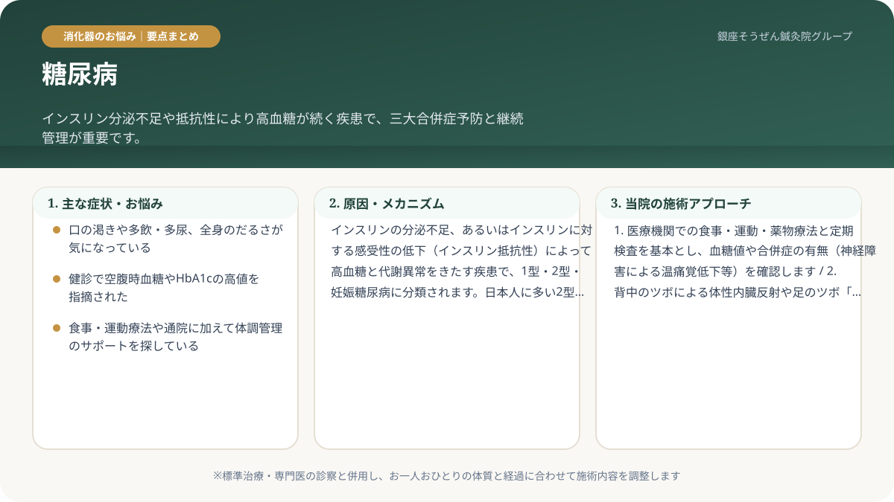

糖尿病の鍼灸
インスリン分泌不足や抵抗性により高血糖が続く疾患で、三大合併症予防と継続管理が重要です。
まず知っておきたい要点と改善の流れ

インスリンの分泌不足、あるいはインスリンに対する感受性の低下（インスリン抵抗性）によって高血糖と代謝異常をきたす疾患で、1型・2型・妊娠糖尿病に分類されます。日本人に多い2型は初期無症状で緩やかに進行し、遺伝的なインスリン分泌能の低さに加え、肥満、脂肪肝に伴う遊離脂肪酸増加やアディポネクチン減少、内臓疲労などが関与します。
このようなお悩みはありませんか？
- ✓口の渇きや多飲・多尿、全身のだるさが気になっている
- ✓健診で空腹時血糖やHbA1cの高値を指摘された
- ✓食事・運動療法や通院に加えて体調管理のサポートを探している
- ✓手足の冷えやしびれなど末梢循環の低下が気になる
当院の施術アプローチ・改善の流れ
なぜ鍼灸で改善へ向かうのか？（作用機序の図解）
糖尿病に対する鍼灸は、脳腸相関と迷走神経反射による胃腸運動の調整機序を通じて、お体本来の回復力を引き出します。

胃腸機能と深く結びつく四肢・腹部の経穴を刺激し、体性感覚神経から中枢へ信号を送ります。
脳幹を経由した体性-内臓反射により、副交感神経（迷走神経）経由で胃腸の働きを調整します。
弱まったぜん動を促す一方、下痢型の過剰な収縮や内臓知覚過敏は穏やかに鎮静します。
ストレスで乱れにくい胃腸の土台を整え、胃もたれ・便通異常・吐き気の軽減を目指します。
院長YouTube解説・関連動画
膵臓
病院での対応と食事
膵がんの改善には、がんの状態や進行度などによって異なります。
調べてみて膵がんが膵臓内に限られている場合、手術が有効的とされています。
断酒、禁煙、食事、お薬などの日常の生活をうまくコントロールすることが大切です。
脂肪分が多い食事を摂ると膵臓はよりたくさんの消化酵素を分泌しなくてはいけません。脂肪分が多い食事や消化液が多く分泌される食品を控えることが大切です。
コレステロールは、水に溶けにくい性質を持っていて血中ではリポタンパク質という形で運ばれます。コレステロールの役割は、細胞膜の構成、ホルモンの生成、ビタミンDの生成、胆汁の生成です。
【LDLコレステロール（悪玉コレステロール）】
肝臓で生成されたコレステロールを全身の細胞に運び、細胞膜の構築やホルモンの生成などに重要なコレステロールを供給してくれます。
血中のLDLコレステロールが多すぎると血管の壁に蓄積し、動脈硬化の原因になって最終的に心筋梗塞や脳梗塞を引き起こす可能性があります。
【HDLコレステロール（善玉コレステロール）】
血液中の余分なコレステロールを肝臓に戻す役割を担っています。肝臓に戻されたコレステロールは再び処理されて体外に排出されます。これによって血管内のコレステロールが蓄積されるのを防いでくれます。
LDLコレステロールを減らしてHDLコレステロールを増やすためには、トランス脂肪酸、飽和脂肪酸といったお肉やマーガリンといった体に悪い脂肪を減らして、オメガ３脂肪酸を多く含む食品を取ることが推奨されています。
コレステロールが上昇する原因は、肝臓だけではなく高脂肪食、コレステロールを多く含む食品を食べることも関わっています。そのため、健康的な食事が大事です。
中でも特に脂肪の選択が重要です。オリーブオイル、ナッツ、種子、魚などの不飽和脂肪酸を含む食品を選びましょう。
食物繊維の摂取や低脂肪食の実践も大事です。当院では食品成分表を見て脂質が少ない食品を食べるようにお勧めしています。
≪消化不良のサイン≫
便器の中に油が浮くようなうんちが出た場合、脂質の消化不良の状態になっているひとつのサインとなります。
お腹に痛みなどの症状がある場合はしっかりと脂肪を制限しなくてはいけません。
一方、症状がなければ脂肪をとりすぎないよう気をつければ大丈夫です。
自身で判断せず専門医に相談することをおすすめします。
・痛みや息切れなどの身体症状の軽減。
・心理的・精神的苦痛の軽減。
・生活の質(QOL)全般の改善。
・抗がん剤の副作用である吐気や嘔吐の軽減。
膵臓の病気で亡くなったスティーブ・ジョブズ氏は鍼を受けていたそうです。
鍼灸では鎮痛剤では取り切れない痛みやだるさなどを軽減させます。
🎥 他のYouTube切り抜き・解説を読む（あと1件）▼
糖尿病について
糖尿病の定義
糖尿病はインスリンの分泌不足、もしくはインスリンの感受性の低下により、インスリンの作用が障害されて血糖値の上昇をきたし、それに伴って代謝異常を引き起こす病気です。
・インスリンの補充が必要な1型糖尿病
・インスリンが必須ではない2型糖尿病
日本では2型糖尿病が多いです。
このどちらも当てはまらない妊娠によるインスリンの抵抗性が増大することが知られています。メカニズムは明らかになっておらず、女性ホルモンの影響が考えられています。
次のうち、どれか1つでも満たした方は、糖尿病型と判定され、別の日にもう一度これが確認されれば糖尿病とされます。
- •随時血糖値200mg/dL以上
- •空腹時血糖値(10時間以上絶食後の、早朝空腹時の血糖値)126mg/dL以上
- •HbA1c 6.5%以上
糖尿病に鍼灸は効果的です。鍼灸によってヘモグロビンA１cの値が下がるためです。H b A１cは血糖値の非常に重要な指標で、この値が高いか低いかで投薬にするか生活習慣を変えるか改善方法の選択が変わります。
鍼がヘモグロビンA１cを下げることができるのです。しかし、鍼だけでなく血糖値を下げる栄養素、食べ物、ツボもあります。
糖尿病はインスリンが十分に働かないために血中のブドウ糖が増える病気です。血液中の糖の濃度のことを血糖値といい、何年も高いまま放置されると血管が傷つき、将来的に心臓病や失明、腎不全、足の切断などのより重い病気につながります。
別名を「神経血管ボロボロ病」とも言われています。鍼は膵臓に働きかけ、インスリンをたくさん出すことができるため血糖値が下がっていくのです。
原因
インスリン抵抗性の原因の一つとして肥満が挙げられますが、それほど太っていなくても糖尿病を発症することがあります。
実は、日本のインスリンを分泌する能力は欧米人に比べて低く、そのため軽度の肥満でも糖尿病になることがあります。
食事の基本的な考え方は、カロリーを必要以上にとらないようにすることです。
必要量以上のカロリーの摂取は肥満を引き起こす原因となります。
脂肪肝は糖尿病の重要な原因になります。
非アルコール性脂肪肝：糖質の取りすぎによっておこるもの
アルコール性脂肪肝：アルコールによるもの
脂肪肝になると・・・
・内臓脂肪も増えて血液中に遊離脂肪酸が増加
・糖代謝を妨げられる
・妨げられると、ブドウ糖を脂肪に作りかえる作業もとまります。
そして…血液中のブドウ糖が増えて血糖が上昇↑↑します。
それだけではなく
同時に、脂肪細胞から分泌されていたアディポネクチンという、インスリンの働きをよくしてくれる物質が減少↓↓し、逆にＴＮＦ-αというインスリンの働きを妨げる物質の分泌が増加↑↑します。
こうなると、インスリンの働きが悪くなるので、血糖値が高くなって糖尿病を引き起こしたり、悪化させてしまったりします。
肝炎になると右のみぞおち当たりに痛み（鈍痛程度）を感じますが、気づかない場合も多いのです。
とくに急性肝炎の場合、痛みが長引かないのでそのままわからず、放置されることがあります。そして慢性肝炎へと進行してしまいます。
【症状】
・倦怠感
・吐き気
・食欲の低下
などさまざまな症状が出てきます。
症状が風邪にとても似ているので、自分で肝臓病と判断することはとても難しいです。また、いつもの風邪だと思って病院にはいかず、市販薬を飲んで治そうとしてしまう人も多いです。
・黄疸（肌や白目の部分が黄色くなる）
・親指の指先や付け根が赤くなる
などが現れます。
具合が悪いと感じたら、まずは肌や目の色などをチェックし、黄疸が出ているなどの症状が見られるようであれば速やかに病院に行きましょう。
鍼灸による肝臓の再生は非常に得意な分野です。鍼灸は体性内臓反射といい体を刺激することで内臓を活性化させるという改善方法です。人間の反射という働きを使って体を調整するのです。
肝臓のような再生力が強い内臓は体性内臓反射でどんどん機能が回復します。ただし、年齢を重ねると内臓の機能が落ちると思っている人も多いですが、そうではなくて内臓がサボっていることもあります。
この概念は西洋医学にはない概念で、内臓がサボるとホルモンを出さなかったり量を減らしたりします。逆に頑張りすぎると血液の数値が変動して体が悪いという判断を受けることがあります。
鍼灸ではツボを刺激することで肝臓の状態を元に戻すことで健康にするのです。しかし、脂肪肝のような内臓そのものに異常がある場合は変動しにくいです。
脂肪肝の人は運動や低脂肪食の実践など、まず脂肪肝をなくす努力から始めてほしいです。
以下のツボはコレステロールを下げるために有効なツボですが、脂肪肝にも有効です。
親指と人差し指の間の剣の交差した凹みにあります。押すと痛い場所です。
内くるぶしの前側から上に５センチほどなぞった場所にある凹みにあります。
お灸やピップエレキバンで持続的に刺激することで非常に効果が高まります。
【糖質を取ると血糖値が上昇する】
・血液中のブドウ糖が増えて血糖値が上昇し、それをすい臓が感知して、インスリンを分泌します。
【インスリンの作用】
エネルギー源となるブドウ糖を、全身の細胞に送りこむ。
余ったブドウ糖は筋肉細胞や肝臓の細胞に送りこみ、グリコーゲンという物質に作りかえて蓄えています。
【余ったぶどう糖は中性脂肪になる】
また、余ったブドウ糖は肝臓で中性脂肪に作りかえて蓄えられます。内臓の周辺に蓄えるのですが、これがメタボの原因といわれている内臓脂肪です。
さらに余ったブドウ糖は、肝臓に脂肪として蓄えられます。これが脂肪肝です。
どうして余分になったエネルギーを脂肪として蓄えているかというと、いざという時に備える大切な働きなのです。しかし、度を越えてしまった結果脂肪肝になります。
胃腸・逆流性食道炎・機能性ディスペプシアのツボ図解
実際の施術ではお一人おひとりの体質・症状に合わせて選穴しますが、胃食道逆流症（GERD）・機能性ディスペプシア・胃痛・吐き気ケアの臨床でよく用いられる代表的なツボの目安です。

📌 代表的なツボの詳細一覧表を開く（6穴） ▼
| ツボ名 | 位置の目安 | 主な狙い | セルフケアの注意点 |
|---|---|---|---|
| 巨闕（こけつ） | みぞおちの骨のすぐ下 | 胸やけ・みぞおちのつかえ感・横隔膜の緊張緩和 | 食後すぐの強い圧迫は逆流を招くため避けます。 |
| 中脘（ちゅうかん） | みぞおちとおへその真ん中 | 胃もたれ・早期膨満感・胃排出能サポート | 温めながらゆっくり腹式呼吸を行うと緩みます。 |
| 天枢（てんすう） | おへその左右それぞれ指3本分外側 | 消化管全体の蠕動バランス・お腹の張り軽減 | お腹が冷えやすい方は温灸がおすすめです。 |
| 内関（ないかん） | 手首の横ジワから指3本分肘寄りの中央 | 吐き気・胃酸逆流に伴う不快感・下部食道括約筋の調整 | 胃カメラ等の検査前後のセルフケアにも有用です。 |
| 足三里（あしさんり） | 膝の下外側、指4本分下 | 迷走神経を介した胃腸運動調整の最重要穴 | 毎日続けやすい胃腸の養生穴です。 |
| 公孫（こうそん） | 土踏まずの縁、親指の付け根からかかと寄り | 胃痛・胃もたれ・自律神経性の胃腸不調ケア | 内関と組み合わせて優しく押します。 |
国際査読論文の科学的エビデンス
国際的な医学データベース（PubMed・Cochrane等）で報告されている胃食道逆流症（GERD）・機能性ディスペプシア・胃痛・吐き気ケア領域の代表的な査読済み鍼灸研究をまとめています（標準治療との併用や研究上の限界を含めて正確に掲載）。
📚 査読論文データ・PubMed出典リンクを開く（4件） ▼
| 年・研究デザイン | 対象・規模 | 主な結果 | 限界・出典 |
|---|---|---|---|
| 2016年 大規模多施設RCT | 慢性重症機能性便秘 1,075名（15病院） | 週平均完全自発排便回数が電鍼+1.76 vs シャム+0.87（P<0.001）、20週追跡時も持続（P<0.001）。 | 20週以降の長期経過は未評価。 Ann Intern Med (PMID: 27618593) |
| 2020年 多施設RCT | 機能性ディスペプシア（PDS）278名（5施設） | 4週時点の総合改善反応率83.0% vs シャム51.6%（P<0.001）、終了後12週間維持。 | 16週脱落率18%・施術者盲検化不可。 Ann Intern Med (PMID: 32422066) |
| 2025年 多施設RCT | 下痢型過敏性腸症候群（IBS-D）280名（6病院） | 6週時点の複合反応率57.9% vs シャム41.4%（RR 1.40, P=0.008）、重篤な有害事象なし。 | IBS-D限定・中国多施設試験。 Gastroenterology (PMID: 40441496) |
| 2017年 メタ解析 | 胃食道逆流症（GERD）12 RCTs（n=1,235） | 鍼＋西洋薬併用は西洋薬単独より総合改善優位（RR 1.17, p=0.03）、再発率低下（RR 0.42, p<0.001）。 | 組入れ試験の質が低く標準治療との併用が前提。 Acupunct Med (PMID: 28689187) |
参考文献・出典
- 2016年 大規模多施設RCT（慢性重症機能性便秘 1,075名（15病院））— Ann Intern Med (PMID: 27618593)
- 2020年 多施設RCT（機能性ディスペプシア（PDS）278名（5施設））— Ann Intern Med (PMID: 32422066)
- 2025年 多施設RCT（下痢型過敏性腸症候群（IBS-D）280名（6病院））— Gastroenterology (PMID: 40441496)
- 2017年 メタ解析（胃食道逆流症（GERD）12 RCTs（n=1,235））— Acupunct Med (PMID: 28689187)
よくある質問（FAQ）
Q. 糖尿病で神経障害がある場合、お灸でやけどしませんか？▼
Q. 病院の薬や食事療法をやめて鍼灸だけにできますか？▼
あわせて読まれる関連疾患（消化器のお悩み）
椎体・肛門・気管食道・橈骨・腎の複数徴候を合併する先天性疾患。専門医管理下で筋緊張や疲労を補完します。
キノホルムによる薬害で生じた神経障害（新規発症なし）。専門医管理下で慢性期のしびれや筋緊張を補完ケアします。
飲酒が主因でない脂肪肝に炎症・線維化が加わった状態。食事と運動での減量を軸に、倦怠感や生活リズムの乱れを鍼灸で支えます。
長期の過剰飲酒で脂肪肝から肝炎・肝硬変へ進む肝障害。専門医管理と禁酒を基本に疲労や自律神経を整えます。
胃の一部が横隔膜の食道裂孔から上方へ飛び出す状態。医療機関での管理と並行し背部緊張や自律神経を整えます。
ガストリノーマによる胃酸過剰で難治性潰瘍を起こす疾患。専門医の治療を第一に、体調・自律神経を補完します。
CLINICAL RECOVERY CASES
✨ 実際の臨床改善事例・回復経過を見る
銀座本院をはじめ各院での実際の改善事例を症状別に絞り込んでご確認いただけます。
おひとりで悩まず、まずはご相談ください
銀座本院・川口・大宮・横浜・博多・田無の各院でご予約を承っております。